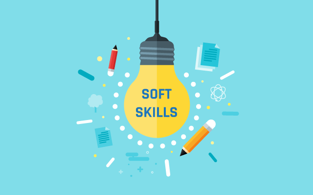

Exemplo de Listas em HTML

Principais Soft Skills
- Inteligência emocional: capacidade de reconhecer e lidar com as próprias emoções e com as emoções do outro.
- Comunicação assertiva: passar informações com clareza, dinâmica e respeito;
- Trabalho em equipe: trabalhar bem com os outros, compartilhando responsabilidades e recursos.;
- Resiliência: capacidade de lidar com problemas de modo assertivo e se adaptar facilmente;
- Habilidade de solucionar problemas: tncontrar soluções práticas para desafios e obstáculos.
Como melhorar as Soft Skills
- Identifique as habilidades que precisam melhorar: reserve tempo para refletir sobre suas próprias ações, comportamentos e emoções. Pergunte a si mesmo o que você pode melhorar e como.
- Faça avaliações de competências: esses testes revelam possíveis problemas e dificuldades específicas, identificando oportunidades de melhorias.
- Solicite feedback regularmente: feedbacks podem ser um grande diferencial no desenvolvimento de soft skills, pois permitem as autoavaliações e como podem melhorar.
-
Saiba mais sobre Soft Skills:
- Entre em contato: